🎬 발주 3편 (v8)
콩이야 나 믿지(집 거실로 변경)·치즈 재판 5번(눈물) 새 이미지 — 이 페이지를 쓰세요. 🟦 표시 컷은 도윤이 입 다묾
🏦 저금하러 온 2세 손님 6컷 · 30초
1번 컷
⏱ 6초도윤: 「안녕하세요. 저 도윤이에요.」
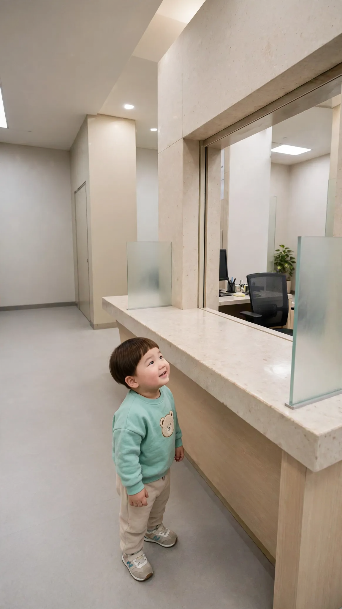
{kind=link}
[Character Action & Continuity] Realistic Korean slice-of-life short video clip. a single open teller window at a Korean bank, seen diagonally in Korea. Maintain exact appearance from start frame: a 24-month-old Korean toddler boy wearing a light mint sweatshirt with a small bear patch, beige pants and small white sneakers. Scale: a small 24-month-old toddler build with natural proportions. [0-3s] Doyoon looks up at the counter and says his line right away, politely [3-6s] Doyoon waits, rocking on his feet [Dialogue Script & Emotion] 도윤 (단독 발화, 0초부터 바로): (공손하게 또박또박 인사하며) "안녕하세요. 저 도유니에요." [Audio & Voice Specifications] Single Voice Track Only: Definite 18 to 24-month-old Korean INFANT TODDLER boy voice. Low-pitched, cute, raspy little boy toddler voice. Strictly NOT a school-age child, NOT female. Sound Format: Solo toddler voice in a quiet room. Background Sound: Quiet indoor room tone. Continuous steady indoor room air. [Technical Directives] 카메라: 창구 아래 도윤이 얼굴이 크게 보이는 낮은 샷(창구 위는 화면 밖). 카메라 고정. 화면: 도윤이와 방만 보인다. 벽과 가구 표면은 무늬 없이 비어 있다. 도윤이 입모양 100% 완벽 립싱크.
2번 컷
⏱ 6초🟦 은행 직원: 「이름이 도윤이구나~ 어떤 업무 도와드릴까요?」
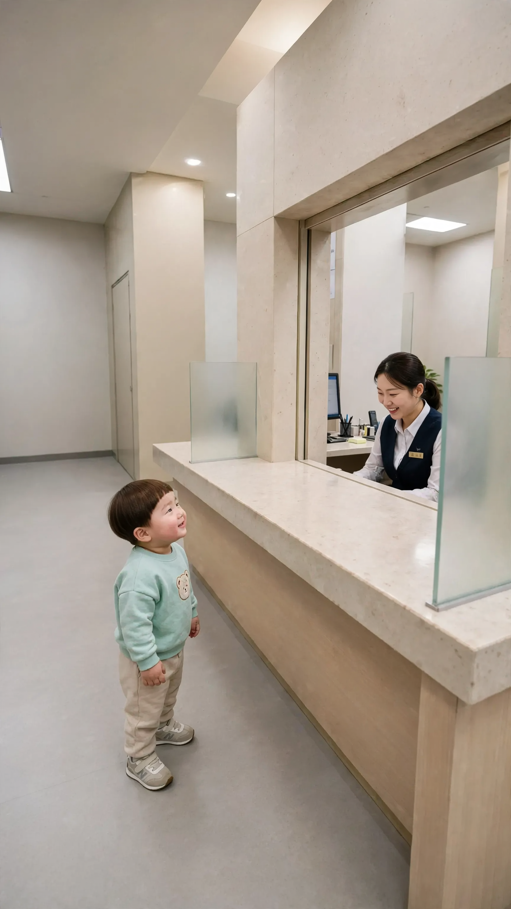
{kind=link}
[Character Action & Continuity] Realistic Korean slice-of-life short video clip. a single open teller window at a Korean bank, seen diagonally in Korea. Maintain exact appearance from start frame: a 24-month-old Korean toddler boy wearing a light mint sweatshirt with a small bear patch, beige pants and small white sneakers. Scale: a small 24-month-old toddler build with natural proportions. Fixed positions: Teller, a fictional ordinary clerk, stays at the right window; Doyoon is left, facing her. Doyoon stays silent looking up at the teller; only the teller speaks. [0-3s] the teller stands up at the open window and leans forward, smiling down at Doyoon [3-6s] Doyoon looks up at her with wide eyes [Dialogue Script & Emotion] 은행 직원, 0초부터 바로: (반갑고 상냥하게) "이름이 도윤이구나~ 어떤 업무 도와드릴까요?" [Audio & Voice Specifications] Single Voice Track Only: One Korean female bank teller in her late 20s, bright friendly customer-service voice. Sound Format: One adult woman voice in a quiet bank. Background Sound: Quiet indoor room tone. Continuous steady indoor room air. [Technical Directives] 카메라: 일어선 직원과 올려다보는 도윤이가 보이는 낮은 미디엄 샷. 카메라 고정. 화면: 도윤이와 은행 창구만 보인다. 말소리는 은행 직원 목소리 하나, 도윤이는 입을 다문다.
3번 컷
⏱ 4초도윤: 「이거 저금하러 왔어요.」
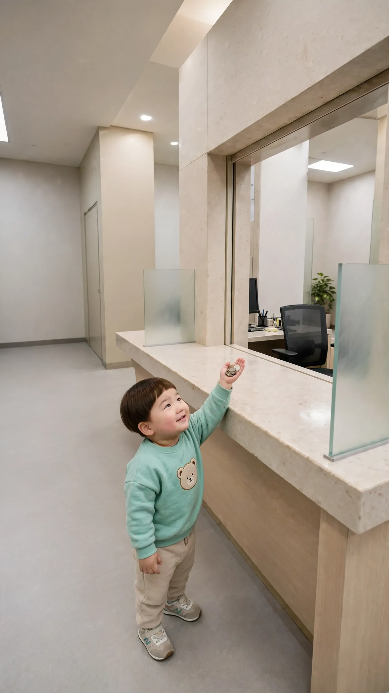
{kind=link}
[Character Action & Continuity] Realistic Korean slice-of-life short video clip. a single open teller window at a Korean bank, seen diagonally in Korea. Maintain exact appearance from start frame: a 24-month-old Korean toddler boy wearing a light mint sweatshirt with a small bear patch, beige pants and small white sneakers. Scale: a small 24-month-old toddler build with natural proportions. Props: a few coins in his raised palm. Prop lock: every prop stays in its spot with the same shape, flaps and contents for the whole clip. [0-2s] Doyoon holds the coins up and speaks right away [2-4s] Doyoon stays on tiptoe, arm stretched up [Dialogue Script & Emotion] 도윤 (단독 발화, 0초부터 바로): (동전을 높이 들어 올리며 야무지게) "이거 저금하러 왔떠요." [Audio & Voice Specifications] Single Voice Track Only: Definite 18 to 24-month-old Korean INFANT TODDLER boy voice. Low-pitched, cute, raspy little boy toddler voice. Strictly NOT a school-age child, NOT female. Sound Format: Solo toddler voice in a quiet room. Background Sound: Quiet indoor room tone. Continuous steady indoor room air. [Technical Directives] 카메라: 까치발로 동전을 든 도윤이가 크게 보이는 낮은 샷(창구 위는 화면 밖). 카메라 고정. 화면: 도윤이와 방만 보인다. 벽과 가구 표면은 무늬 없이 비어 있다. 도윤이 입모양 100% 완벽 립싱크.
4번 컷
⏱ 4초🟦 은행 직원: 「저금을 해 드리면 될까요?」
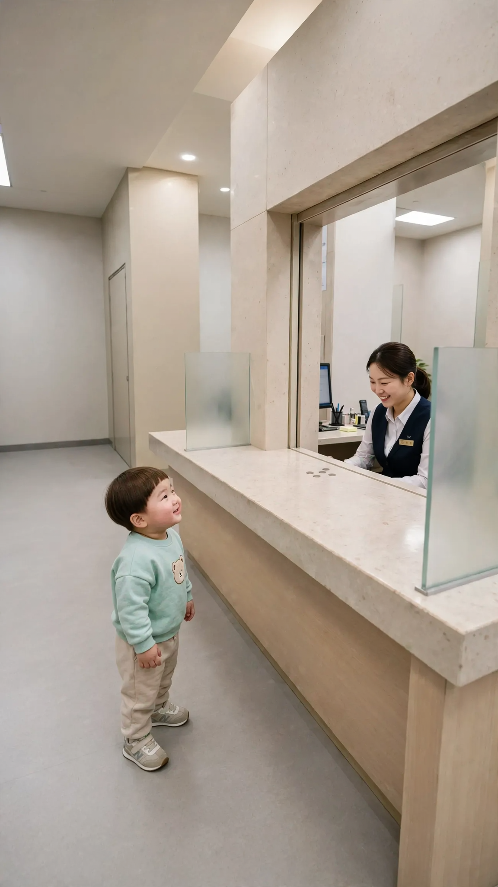
{kind=link}
[Character Action & Continuity] Realistic Korean slice-of-life short video clip. a single open teller window at a Korean bank, seen diagonally in Korea. Maintain exact appearance from start frame: a 24-month-old Korean toddler boy wearing a light mint sweatshirt with a small bear patch, beige pants and small white sneakers. Scale: a small 24-month-old toddler build with natural proportions. Props: a few coins lying still on the counter edge. Prop lock: every prop stays in its spot with the same shape, flaps and contents for the whole clip. Fixed positions: Teller, a fictional ordinary clerk, stays at the right window; Doyoon is left, facing her. Doyoon stays silent looking up at the teller; only the teller speaks. [0-2s] the teller smiles warmly and nods at Doyoon [2-4s] Doyoon nods back proudly [Dialogue Script & Emotion] 은행 직원, 0초부터 바로: (귀엽다는 듯 다정하게) "저금을 해 드리면 될까요?" [Audio & Voice Specifications] Single Voice Track Only: One Korean female bank teller in her late 20s, bright friendly customer-service voice. Sound Format: One adult woman voice in a quiet bank. Background Sound: Quiet indoor room tone. Continuous steady indoor room air. [Technical Directives] 카메라: 창구 너머 직원과 도윤이가 보이는 낮은 미디엄 샷. 카메라 고정. 화면: 도윤이와 은행 창구만 보인다. 말소리는 은행 직원 목소리 하나, 도윤이는 입을 다문다.
5번 컷
⏱ 4초🟦 엄마(화면 밖): 「도윤아, 거기서 뭐 해?」
{kind=link}
[Character Action & Continuity] Realistic Korean slice-of-life short video clip. a single open teller window at a Korean bank, seen diagonally in Korea. Maintain exact appearance from start frame: a 24-month-old Korean toddler boy wearing a light mint sweatshirt with a small bear patch, beige pants and small white sneakers. Scale: a small 24-month-old toddler build with natural proportions. Fixed positions: Teller, a fictional ordinary clerk, stays at the right window; Doyoon is left, facing her. Doyoon stays silent with a sulky pout; only the off-screen mother speaks. [0-2s] Doyoon turns his head toward the left, listening [2-4s] Doyoon blinks and looks back and forth [Dialogue Script & Emotion] 엄마(화면 밖), 0초부터 바로: (놀라고 반가운 목소리로) "도윤아, 거기서 뭐 해?" [Audio & Voice Specifications] Single Voice Track Only: One off-screen Korean woman in her early 30s, the boy's mother, speaking from outside the frame in a calm, warm, matter-of-fact voice. Sound Format: One off-screen adult woman voice in a quiet room. Background Sound: Quiet indoor room tone. Continuous steady indoor room air. [Technical Directives] 카메라: 창구 앞 도윤이가 보이는 낮은 미디엄 샷. 카메라 고정. 화면: 도윤이와 방만 보인다. 벽과 가구 표면은 무늬 없이 비어 있다. 말소리는 화면 밖 엄마 목소리 하나, 도윤이는 입을 다문다.
6번 컷
⏱ 6초도윤: 「도윤이 부자 되려고 저금해!」
{kind=link}
[Character Action & Continuity] Realistic Korean slice-of-life short video clip. a single open teller window at a Korean bank, seen diagonally in Korea. Maintain exact appearance from start frame: a 24-month-old Korean toddler boy wearing a light mint sweatshirt with a small bear patch, beige pants and small white sneakers. Scale: a small 24-month-old toddler build with natural proportions. Fixed positions: Teller, a fictional ordinary clerk, stays at the right window; Doyoon is left, facing her. [0-3s] Doyoon turns toward his mom and says his line right away with a proud grin [3-6s] Doyoon stands tall with his chest puffed out and beams [Dialogue Script & Emotion] 도윤 (단독 발화, 0초부터 바로): (턱을 치켜들고 뿌듯하게) "도유니 부자 되려고 저금해!" [Audio & Voice Specifications] Single Voice Track Only: Definite 18 to 24-month-old Korean INFANT TODDLER boy voice. Low-pitched, cute, raspy little boy toddler voice. Strictly NOT a school-age child, NOT female. Sound Format: Solo toddler voice in a quiet room. Background Sound: Quiet indoor room tone. Continuous steady indoor room air. [Technical Directives] 카메라: 뿌듯한 도윤이 얼굴이 보이는 낮은 미디엄 샷. 카메라 고정. 화면: 도윤이와 방만 보인다. 벽과 가구 표면은 무늬 없이 비어 있다. 도윤이 입모양 100% 완벽 립싱크.
🏠 콩이야 나 믿지? 3컷 · 20초
1번 컷
⏱ 6초도윤: 「콩이야~ 이리 와~」
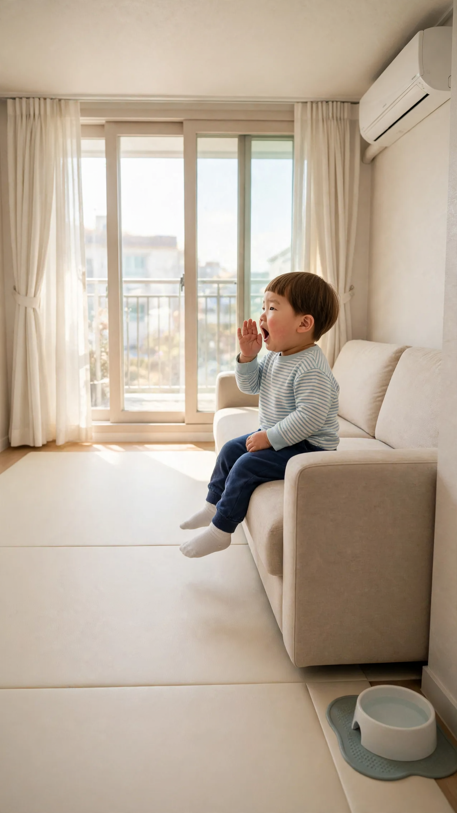
{kind=link}
[Character Action & Continuity] Realistic Korean slice-of-life short video clip. an ordinary modern South Korean apartment living room in Korea. Maintain exact appearance from start frame: a 24-month-old Korean toddler boy wearing a light blue striped long-sleeve tee, navy jogger pants and white socks. Scale: a small 24-month-old toddler build with natural proportions. [0-2s] Doyoon calls toward the left side of the room in a long drawn-out voice right away [2-6s] Kongi, a small fluffy white Maltese puppy, runs in from the left edge and sits on the play mat in front of the sofa [Dialogue Script & Emotion] 도윤 (단독 발화, 0초부터 바로): (노래하듯 길게 부르며) "콩이야~ 이리 와~" [Audio & Voice Specifications] Single Voice Track Only: Definite 18 to 24-month-old Korean INFANT TODDLER boy voice. Low-pitched, cute, raspy little boy toddler voice. Strictly NOT a school-age child, NOT female. Sound Format: Solo toddler voice in a quiet room. Background Sound: Quiet indoor room tone. Continuous steady indoor room air. [Technical Directives] 카메라: 소파 앞쪽 끝에 앉은 도윤이 얼굴이 크게 보이는 가까운 미디엄 샷. 카메라 고정. 화면: 도윤이와 방만 보인다. 벽과 가구 표면은 무늬 없이 비어 있다. 도윤이 입모양 100% 완벽 립싱크.
2번 컷
⏱ 8초도윤: 「콩이야 나 믿지? 나 도와줄 수 있지?」
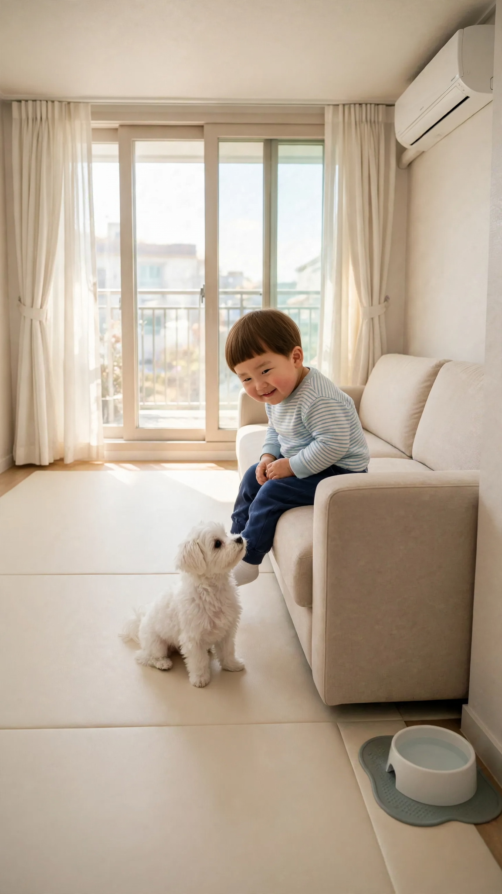
{kind=link}
[Character Action & Continuity] Realistic Korean slice-of-life short video clip. an ordinary modern South Korean apartment living room in Korea. Maintain exact appearance from start frame: a 24-month-old Korean toddler boy wearing a light blue striped long-sleeve tee, navy jogger pants and white socks. Scale: a small 24-month-old toddler build with natural proportions. [0-5s] Doyoon leans toward Kongi and says his line right away with a sweet smile [5-8s] Kongi gives one short happy bark as if answering yes, and Doyoon nods [Dialogue Script & Emotion] 도윤 (단독 발화, 0초부터 바로): (다정한 척 속삭이듯) "콩이야 나 믿지? 나 도와줄 수 있지?" [Audio & Voice Specifications] Single Voice Track Only: Definite 18 to 24-month-old Korean INFANT TODDLER boy voice. Low-pitched, cute, raspy little boy toddler voice. Strictly NOT a school-age child, NOT female. Sound Format: Solo toddler voice in a quiet room. Background Sound: Quiet indoor room tone. Continuous steady indoor room air. [Technical Directives] 카메라: 콩이를 내려다보는 도윤이 얼굴이 보이는 가까운 미디엄 샷. 카메라 고정. 화면: 도윤이와 방만 보인다. 벽과 가구 표면은 무늬 없이 비어 있다. 도윤이 입모양 100% 완벽 립싱크.
3번 컷
⏱ 6초도윤: 「엄마 콩이가 주방에 물 쏟았어~」
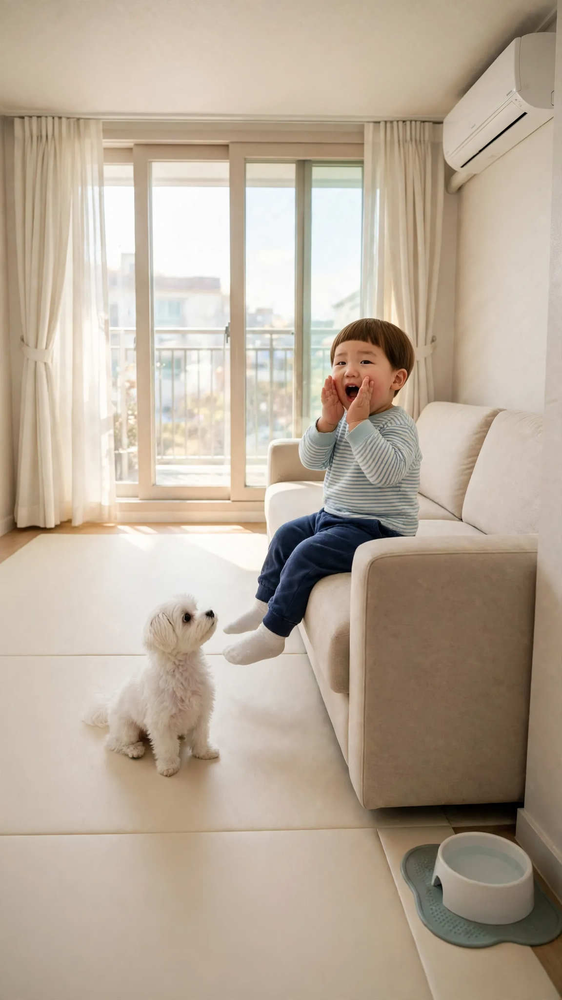
{kind=link}
[Character Action & Continuity] Realistic Korean slice-of-life short video clip. an ordinary modern South Korean apartment living room in Korea. Maintain exact appearance from start frame: a 24-month-old Korean toddler boy wearing a light blue striped long-sleeve tee, navy jogger pants and white socks. Scale: a small 24-month-old toddler build with natural proportions. [0-4s] Doyoon raises both hands like a little megaphone and calls out his line toward the camera right away [4-6s] Doyoon faces the camera again with a big satisfied grin as Kongi stares up at him [Dialogue Script & Emotion] 도윤 (단독 발화, 0초부터 바로): (억울한 척 고자질하듯) "엄마 콩이가 주방에 물 쏟았떠~" [Audio & Voice Specifications] Single Voice Track Only: Definite 18 to 24-month-old Korean INFANT TODDLER boy voice. Low-pitched, cute, raspy little boy toddler voice. Strictly NOT a school-age child, NOT female. Sound Format: Solo toddler voice in a quiet room. Background Sound: Quiet indoor room tone. Continuous steady indoor room air. [Technical Directives] 카메라: 고개를 돌린 도윤이 얼굴이 보이는 가까운 미디엄 샷. 카메라 고정. 화면: 도윤이와 방만 보인다. 벽과 가구 표면은 무늬 없이 비어 있다. 도윤이 입모양 100% 완벽 립싱크.
⚖️ 누가 치즈를 먹었나 5컷 · 30초
1번 컷
⏱ 6초🟦 판사(화면 밖): 「지금부터 누가 치즈를 먹었나 재판을 시작하겠습니다」
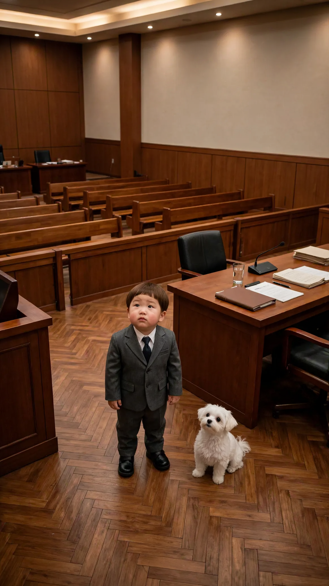
{kind=link}
[Character Action & Continuity] Realistic Korean slice-of-life short video clip. a Korean courtroom seen from beside the judges' bench in Korea. Maintain exact appearance from start frame: a 24-month-old Korean toddler boy wearing a tiny charcoal suit with a white shirt and a navy tie, polished little black shoes. Scale: a small 24-month-old toddler build with natural proportions. Fixed positions: The judge is off-screen at the camera; Doyoon and Kongi stand in front of the defense table. Doyoon stays silent looking up toward the judge; only the off-screen judge speaks. [0-4s] Doyoon and Kongi look up toward the judge, listening quietly [4-6s] Doyoon blinks and stands still, Kongi tilts its head [Dialogue Script & Emotion] 판사(화면 밖), 0초부터 바로: (엄숙하고 근엄하게) "지금부터 누가 치즈를 먹었나 재판을 시작하겠습니다" [Audio & Voice Specifications] Single Voice Track Only: One off-screen Korean male judge in his 50s, calm, formal, dignified courtroom voice. Sound Format: One off-screen adult man voice in a quiet courtroom. Background Sound: Quiet indoor room tone. Continuous steady indoor room air. [Technical Directives] 카메라: 판사 자리에서 내려다보는 사선 미디엄 샷, 올려다보는 도윤이와 콩이. 카메라 고정. 화면: 도윤이와 콩이와 법정만 보인다. 말소리는 화면 밖 판사 목소리 하나, 도윤이는 입을 다문다.
2번 컷
⏱ 6초도윤: 「도윤이는 치즈 안 먹었어. 콩이가 먹었어.」
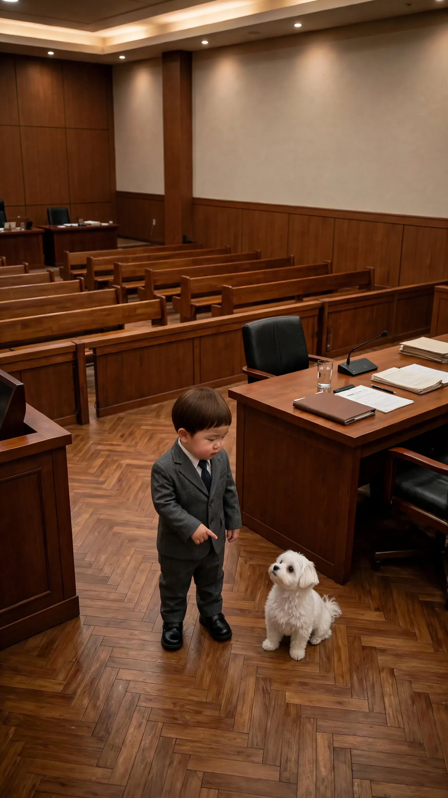
{kind=link}
[Character Action & Continuity] Realistic Korean slice-of-life short video clip. a Korean courtroom seen from beside the judges' bench in Korea. Maintain exact appearance from start frame: a 24-month-old Korean toddler boy wearing a tiny charcoal suit with a white shirt and a navy tie, polished little black shoes. Scale: a small 24-month-old toddler build with natural proportions. Fixed positions: The judge is off-screen at the camera; Doyoon and Kongi stand in front of the defense table. [0-3s] Doyoon points at Kongi and says his line right away [3-6s] Kongi turns its head and stares up at Doyoon with a flat, unimpressed look [Dialogue Script & Emotion] 도윤 (단독 발화, 0초부터 바로): (콩이를 가리키며 시치미 떼고) "도유니는 치즈 안 먹었떠. 콩이가 먹었떠." [Audio & Voice Specifications] Single Voice Track Only: Definite 18 to 24-month-old Korean INFANT TODDLER boy voice. Low-pitched, cute, raspy little boy toddler voice. Strictly NOT a school-age child, NOT female. Sound Format: Solo toddler voice in a quiet room. Background Sound: Quiet indoor room tone. Continuous steady indoor room air. [Technical Directives] 카메라: 콩이를 가리키는 도윤이와 쳐다보는 콩이가 보이는 사선 미디엄 샷. 카메라 고정. 화면: 도윤이와 방만 보인다. 벽과 가구 표면은 무늬 없이 비어 있다. 도윤이 입모양 100% 완벽 립싱크.
3번 컷
⏱ 6초🟦 판사(화면 밖): 「그럼 도윤이는 하나도 안먹고 콩이가 다 먹은거네?」
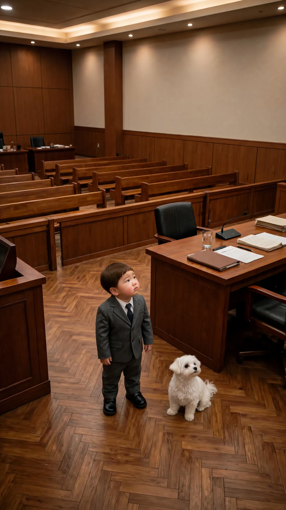
{kind=link}
[Character Action & Continuity] Realistic Korean slice-of-life short video clip. a Korean courtroom seen from beside the judges' bench in Korea. Maintain exact appearance from start frame: a 24-month-old Korean toddler boy wearing a tiny charcoal suit with a white shirt and a navy tie, polished little black shoes. Scale: a small 24-month-old toddler build with natural proportions. Fixed positions: The judge is off-screen at the camera; Doyoon and Kongi stand in front of the defense table. Doyoon stays silent looking up toward the judge; only the off-screen judge speaks. [0-4s] Doyoon looks up toward the judge with a sheepish guilty face [4-6s] Doyoon glances sideways at Kongi, then back up [Dialogue Script & Emotion] 판사(화면 밖), 0초부터 바로: (차분하게 되묻듯) "그럼 도윤이는 하나도 안먹고 콩이가 다 먹은거네?" [Audio & Voice Specifications] Single Voice Track Only: One off-screen Korean male judge in his 50s, calm, formal, dignified courtroom voice. Sound Format: One off-screen adult man voice in a quiet courtroom. Background Sound: Quiet indoor room tone. Continuous steady indoor room air. [Technical Directives] 카메라: 판사 자리에서 내려다보는 사선 미디엄 샷. 카메라 고정. 화면: 도윤이와 콩이와 법정만 보인다. 말소리는 화면 밖 판사 목소리 하나, 도윤이는 입을 다문다.
4번 컷
⏱ 6초도윤: 「음… 도윤이도 먹는 거 조금 도와줬어.」
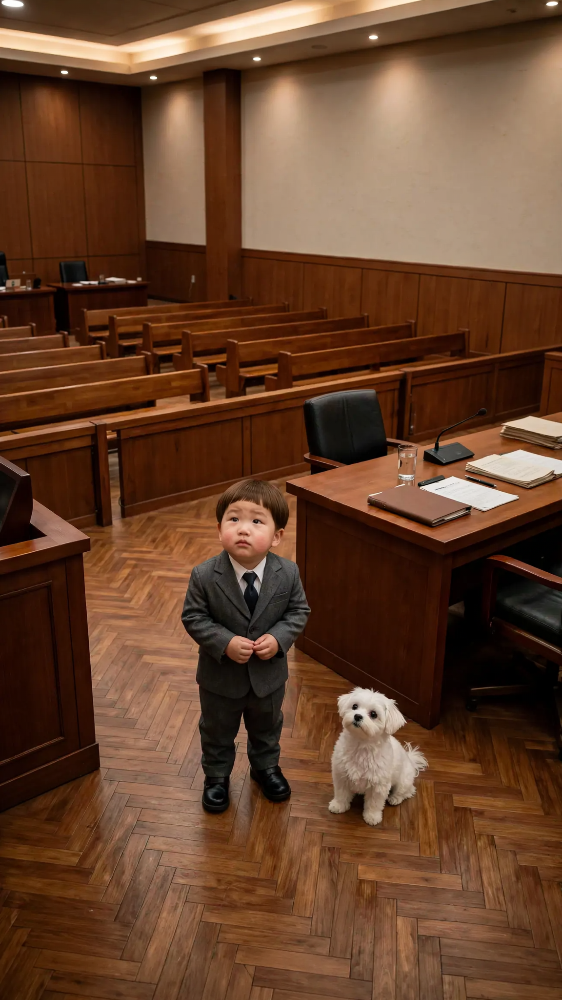
{kind=link}
[Character Action & Continuity] Realistic Korean slice-of-life short video clip. a Korean courtroom seen from beside the judges' bench in Korea. Maintain exact appearance from start frame: a 24-month-old Korean toddler boy wearing a tiny charcoal suit with a white shirt and a navy tie, polished little black shoes. Scale: a small 24-month-old toddler build with natural proportions. Fixed positions: The judge is off-screen at the camera; Doyoon and Kongi stand in front of the defense table. [0-4s] Doyoon fiddles with his fingers and says his line right away, sheepishly [4-6s] Doyoon peeks up toward the judge [Dialogue Script & Emotion] 도윤 (단독 발화, 0초부터 바로): (손가락을 꼼지락거리며 쭈뼛쭈뼛) "음… 도유니도 먹는 거 조금 도와줬떠." [Audio & Voice Specifications] Single Voice Track Only: Definite 18 to 24-month-old Korean INFANT TODDLER boy voice. Low-pitched, cute, raspy little boy toddler voice. Strictly NOT a school-age child, NOT female. Sound Format: Solo toddler voice in a quiet room. Background Sound: Quiet indoor room tone. Continuous steady indoor room air. [Technical Directives] 카메라: 쭈뼛거리는 도윤이 얼굴이 보이는 사선 미디엄 샷. 카메라 고정. 화면: 도윤이와 방만 보인다. 벽과 가구 표면은 무늬 없이 비어 있다. 도윤이 입모양 100% 완벽 립싱크.
5번 컷
⏱ 6초도윤: 「사실 도윤이가 다 먹었어. 콩이야 미안해.」
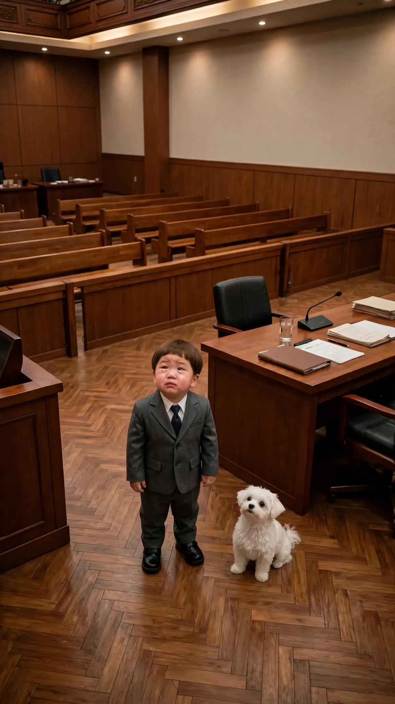
{kind=link}
[Character Action & Continuity] Realistic Korean slice-of-life short video clip. a Korean courtroom seen from beside the judges' bench in Korea. Maintain exact appearance from start frame: a 24-month-old Korean toddler boy wearing a tiny charcoal suit with a white shirt and a navy tie, polished little black shoes. Scale: a small 24-month-old toddler build with natural proportions. Fixed positions: The judge is off-screen at the camera; Doyoon and Kongi stand in front of the defense table. [0-3s] Doyoon looks up at the judge, tears rolling down, and says the first sentence right away, voice breaking [3-5s] Doyoon turns to Kongi and says the second sentence to him, sniffling [5-6s] Doyoon sniffles, eyes on Kongi, with a sorry pout [Dialogue Script & Emotion] 도윤 (단독 발화, 0초부터 바로): (훌쩍훌쩍 울면서, 눈물 그렁그렁) "사실 도유니가 다 먹었떠. 콩이야 미안해." [Audio & Voice Specifications] Single Voice Track Only: Definite 18 to 24-month-old Korean INFANT TODDLER boy voice. Low-pitched, cute, raspy little boy toddler voice. Strictly NOT a school-age child, NOT female. Sound Format: Solo toddler voice in a quiet room. Background Sound: Quiet indoor room tone. Continuous steady indoor room air. [Technical Directives] 카메라: 눈물 흘리는 도윤이와 콩이 사선 미디엄 샷. 카메라 고정. 화면: 도윤이와 방만 보인다. 벽과 가구 표면은 무늬 없이 비어 있다. 도윤이 입모양 100% 완벽 립싱크.